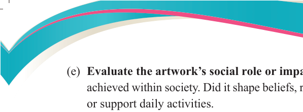
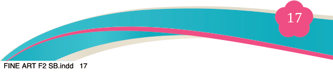
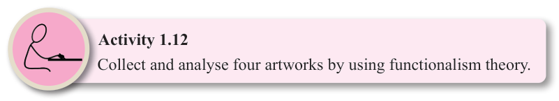

Fine Art for Secondary Schools

17

Student’s Book Form Two

(e) Evaluate the artwork’s social role or impact: Reflect on what the artwork
achieved within society. Did it shape beliefs, reinforce identity, solve problems
or support daily activities.

Purposes of theories of art
The general purpose of the theories of art is to explain every aesthetic feature that
is found in any form of art. In each type of theory of art, its purpose can simply be seen through its aesthetic features it demonstrates. These four theories of art, serve the following purposes:
(a) Showing functions of art in the society;
(b) Showing how art imitates life;
(c) Showing how art expresses emotions. When viewers of this kind of an artwork
take this point of view, they often assume that everyone understands what they
understood; and
(d) Showing how art expresses a hidden meaning. It tells us about artistic expression and represents abstract ideas.
Application of the theory of art in daily life
Practicing theories of art allows for fine art students, fine artists, art scholars and art curators to learn not only professional art knowledge, but also daily life values in general. The content of the theories of art is very rich in the Fine art
subject. It does not only foster the relationship between art and society but also it
leads to change of mind-set and thinking of the fine artists themselves.
The study of the theory of art, just like any other discipline, is not static; it is dynamic. It changes and develops according to new ideas; it is not a prescribed set of rules. Therefore, as Fine art students discuss theories of art, changes of ideas occur in their life experience. Moreover, it enables fine artists to have self- expression in art works, use more creative techniques, and interact meaningfully with other art consumers.

Activity 1.12
Collect and analyse four artworks by using functionalism theory.

04/08/2025 13:54